Làm sao để đánh giá sức khỏe của một thương hiệu
Brand Health Check project (Market Research – Quantitative)
-
Context & Business problem
- Một doanh nghiệp kinh doanh sản phẩm dưỡng thể (body lotion) dành cho nữ muốn hiểu rõ:
- Thương hiệu/sản phẩm hiện được người tiêu dùng đánh giá như thế nào.
- Vị thế của thương hiệu so với các đối thủ cạnh tranh trong ngành.
Từ đó, doanh nghiệp cần một nghiên cứu Brand Health để đánh giá toàn diện tình trạng thương
hiệu.
- Một doanh nghiệp kinh doanh sản phẩm dưỡng thể (body lotion) dành cho nữ muốn hiểu rõ:
-
Research objectives
- Đo lường sức khỏe thương hiệu một cách toàn diện.
- Xác định điểm mạnh, điểm yếu của thương hiệu trong tâm trí người tiêu dùng.
- So sánh hiệu quả thương hiệu với các đối thủ chính.
-
Research steps
-
Phương pháp nghiên cứu
- Nghiên cứu định lượng (Quantitative).
- Khảo sát online (Online survey) thông qua bảng hỏi.
-
Questionnaire
- Screening: Giới tính nữ, sinh sống tại Việt Nam, thu nhập > 15 triệu/tháng, độ tuổi 20–35.
- Main questionnaire: Nhận biết thương hiệu, usage, attitude, brand imagery, funnel, NPS.
- Thu thập dữ liệu: gửi form khảo sát đến mẫu nghiên cứu đạt tiêu chí.
-
Xử lý dữ liệu:
- Làm sạch dữ liệu (Data cleaning).
- Phân tích bằng SPSS hoặc Power BI.
- Output: Report hoặc Dashboard phục vụ ra quyết định.
-
Phương pháp nghiên cứu
-
Business questions
- Người tiêu dùng nhận biết thương hiệu như thế nào?
- Thị phần của thương hiệu đang ở mức nào?
- Đặc tính nào được đánh giá cao/thấp?
- Đặc tính nào có tiềm năng tạo khác biệt?
- Đặc tính nào cần ưu tiên cải thiện?
- Conversion process đang bị nghẽn ở đâu?
- SKU nào nên ưu tiên để mở rộng độ phủ?
- Thứ tự ưu tiên các kênh truyền thông?
-
Tổng hợp insight
- Brand A đang giữ vị thế dẫn đầu thị trường với mức độ nhận biết, thị phần và mức độ ưu tiên sử dụng cao, tuy nhiên vẫn tồn tại dư địa cải thiện trải nghiệm nhằm nâng cao khả năng được người tiêu dùng giới thiệu.
- Các thương hiệu như Brand C và Brand D có tiềm năng tăng trưởng nhưng đang bị nghẽn ở giai đoạn chuyển đổi từ nhận biết sang dùng thử, đòi hỏi chiến lược tập trung vào việc giảm rào cản trải nghiệm ban đầu.
- Phân tích vai trò của các đặc tính sản phẩm cho phép xác định rõ đâu là yếu tố thúc đẩy lựa chọn, đâu là cơ hội tạo khác biệt, từ đó giúp thương hiệu phân bổ nguồn lực hiệu quả hơn thay vì đầu tư dàn trải.
- Thứ tự các kênh truyền thông cần tiếp cận để tối ưu hóa độ phủ là: Facebook → Youtube → Ví điện tử (Momo,…) → Sàn thương mại điện tử (Shopee,…)
Nội dung phân tích (Dummy data – Brand giả định)
Awareness – Nhận biết thương hiệu
Người tiêu dùng hiện đang nhận biết các thương hiệu trên thị trường như thế nào?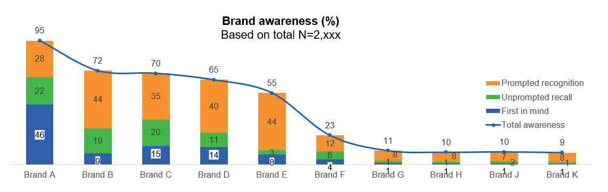
First in mind: Thương hiệu được nhắc đến đầu tiên.
Unprompted recall: Nhận biết không gợi ý.
Prompted recognition: Nhận biết có gợi ý.
Kết quả phân tích cho thấy Brand A là thương hiệu có mức độ nhận biết cao nhất trên thị trường, đồng thời cũng sở hữu tỷ lệ “First in mind (Nghĩ đến đầu tiên)” cao nhất. Điều này phản ánh vị thế thương hiệu mạnh, không chỉ được biết đến rộng rãi mà còn nằm trong nhóm thương hiệu được người tiêu dùng ưu tiên nghĩ tới ngay khi có nhu cầu về sản phẩm dưỡng thể (body lotion).
Brand C tuy có mức độ nhận biết tổng thể thấp hơn so với Brand A, nhưng lại có tỷ lệ First in mind tương đối cao trong nhóm người biết đến thương hiệu. Điều này cho thấy Brand C có tiềm năng phát triển trong tương lai nếu được đầu tư mở rộng độ phủ nhận biết, bởi thương hiệu đã có dấu ấn nhất định trong tâm trí người tiêu dùng.
Trong khi đó, Brand B sở hữu nền tảng nhận biết tương đối tốt, chủ yếu đến từ nhận biết có gợi ý (Prompted recognition), nhưng tỷ lệ First in mind còn hạn chế. Đây là dấu hiệu cho thấy thương hiệu cần tập trung vào chiến lược chuyển đổi từ “biết đến” sang “nhớ đến đầu tiên”, thông qua các hoạt động gia tăng trải nghiệm thực tế, khuyến khích dùng thử hoặc tăng tần suất tiếp xúc có chiều sâu để củng cố vị trí thương hiệu trong tâm trí người tiêu dùng.
Brand Funnel & Market Share
Thị phần của các thương hiệu đang ở mức nào và đâu là điểm nghẽn trong hành trình người tiêu dùng?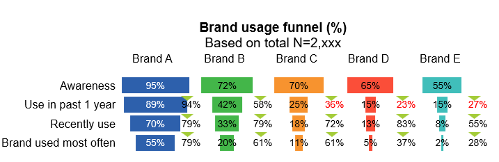
Dựa trên chỉ số BUMO (Brand Used Most Often – thương hiệu được sử dụng thường xuyên nhất), Brand A hiện đang dẫn đầu thị trường với thị phần vượt trội, gần như chiếm vị thế thống lĩnh. Thị phần của Brand A lớn gấp đôi thương hiệu theo sau và chiếm hơn một nửa tổng thị trường, cho thấy mức độ trung thành và thói quen sử dụng rất cao từ phía người tiêu dùng.
Tham khảo về chỉ số BUMO tại đây: BUMO – Brand Used Most Often
Brand C và Brand D đang gặp điểm nghẽn rõ rệt trong hành trình từ nhận biết sang dùng thử. Mặc dù đã đạt được mức độ nhận biết nhất định, nhưng tỷ lệ chuyển đổi sang trải nghiệm thực tế còn hạn chế. Điều này đặt ra câu hỏi nghiên cứu quan trọng: đâu là rào cản khiến người tiêu dùng chưa sẵn sàng thử sản phẩm, và những yếu tố nào có thể thúc đẩy quá trình chuyển đổi từ awareness sang trial.
Xét về thái độ của người tiêu dùng đối với thương hiệu (Brand disposition), Brand A tiếp tục thể hiện vị thế mạnh nhất khi có tới 49% người tiêu dùng ưu tiên sử dụng, đồng thời tỷ lệ người từ chối mua thấp. Brand B theo sát với 35% người tiêu dùng cho biết ưu tiên sử dụng, cho thấy đây là thương hiệu có khả năng cạnh tranh trực tiếp.
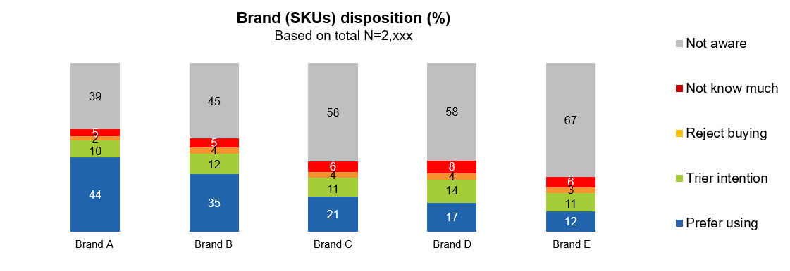
Tham khảo về Brand Disposition tại đây: Brand Disposition
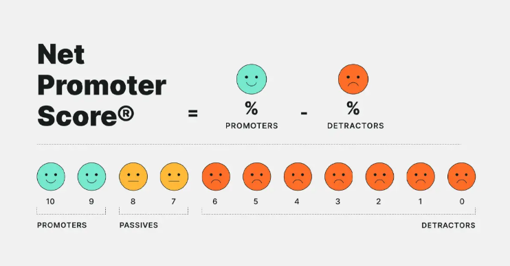
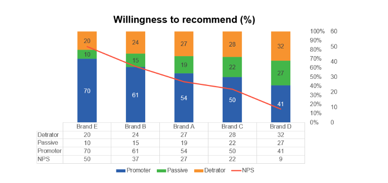
Đáng chú ý, khi xét đến NPS Brand E lại đạt điểm NPS cao hơn so với Brand A. Điều này cho thấy Brand E tạo được ấn tượng tích cực đủ mạnh để người tiêu dùng sẵn sàng giới thiệu cho người khác, trong khi Brand A dù dẫn đầu thị trường nhưng mức độ sẵn sàng giới thiệu lại thấp hơn. Kết quả này gợi ý nhu cầu phân tích sâu hơn các yếu tố ảnh hưởng đến trải nghiệm và sự hài lòng, nhằm xây dựng chiến lược cải thiện NPS cho thương hiệu dẫn đầu.
Key Drivers & Product Attributes
Những đặc điểm sản phẩm nào được đánh giá cao, đâu là cơ hội tạo khác biệt và đâu là ưu tiên cải thiện?Nghiên cứu tập trung vào việc xác định những đặc tính của sản phẩm dưỡng thể (body lotion) dành cho nữ mà người tiêu dùng đánh giá cao, mong muốn trải nghiệm, hoặc cho rằng ít quan trọng và không ảnh hưởng đáng kể đến quyết định mua. Người tiêu dùng được yêu cầu đánh giá các đặc tính sản phẩm thông qua hai nhóm câu hỏi. Thứ nhất là các tiêu chí khiến họ cân nhắc và lựa chọn mua sản phẩm (Appealing factors). Thứ hai là mức độ quan trọng của từng tiêu chí đối với họ, được chấm điểm trên thang từ 0 đến 10 (Important factors).
Dựa trên kết quả, các đặc tính sản phẩm được phân loại thành bốn nhóm: Yếu tố thúc đẩy lựa chọn, Cơ hội khai thác, Yếu tố nền tảng và Ưu tiên thấp. Sau khi xác định vai trò của từng đặc tính, bước tiếp theo là đánh giá xem mỗi thương hiệu đang mạnh hay yếu ở những đặc tính này.
Tham khảo về Key Drivers tại đây: Key Drivers
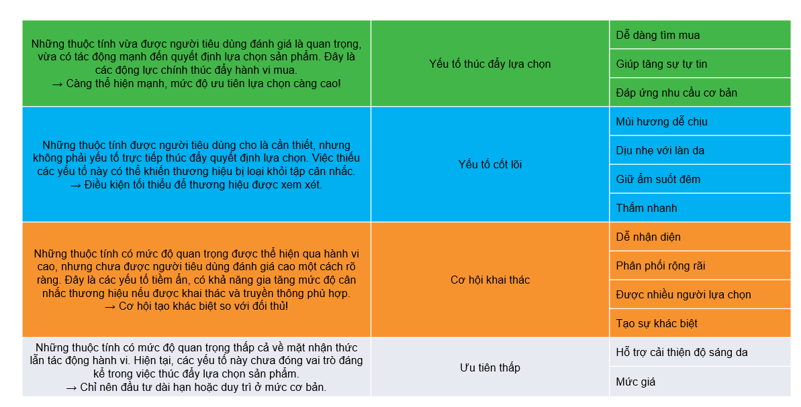
Trong kịch bản lý tưởng, sản phẩm của thương hiệu cần thể hiện rõ thế mạnh ở nhóm Yếu tố thúc đẩy lựa chọn, bởi đây là nhóm trực tiếp ảnh hưởng đến quyết định mua. Ngược lại, không nhất thiết phải đầu tư mạnh vào các đặc tính thuộc nhóm Ưu tiên thấp.
Một kịch bản chiến lược khác là tập trung vào nhóm Cơ hội khai thác. Đây là những đặc tính chưa được người tiêu dùng đánh giá cao một cách rõ ràng, nhưng lại có tác động thực tế đến hành vi mua. Việc đầu tư đúng mức vào nhóm này có thể giúp thương hiệu tạo sự khác biệt và tiếp cận các phân khúc ngách trên thị trường.
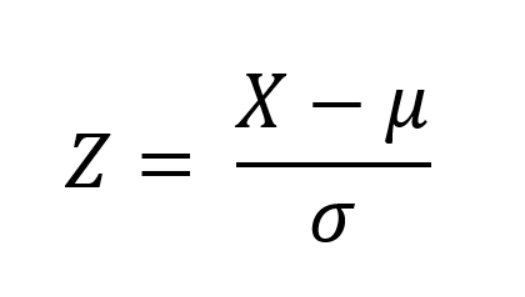
Để xác định một cách khách quan điểm mạnh và điểm yếu của thương hiệu, phương pháp chuẩn hóa (Standardization) được áp dụng. Sau khi so sánh giữa tỷ lệ đánh giá thực tế và tỷ lệ kỳ vọng đối với từng đặc tính, các giá trị được chuẩn hóa theo phân phối chuẩn. Những đặc tính có giá trị nằm ngoài khoảng trung bình cộng trừ ba lần độ lệch chuẩn được xem là điểm mạnh hoặc điểm yếu có ý nghĩa thống kê của thương hiệu, thay vì chỉ là dao động ngẫu nhiên trong dữ liệu.
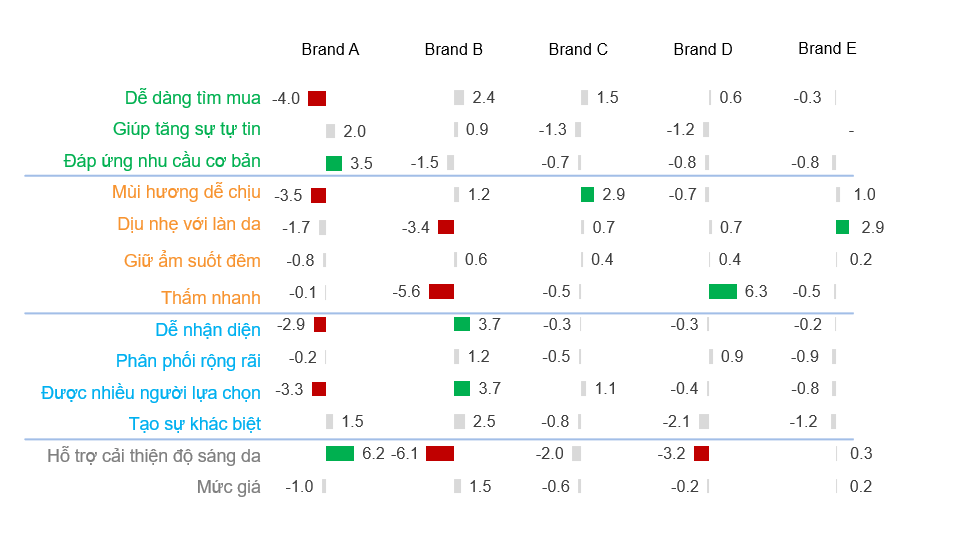
Sau khi hoàn tất phân tích, thương hiệu cần ưu tiên củng cố nhóm Yếu tố thúc đẩy lựa chọn, đồng thời cân nhắc khai thác có chọn lọc các đặc tính thuộc nhóm Cơ hội khai thác và Yếu tố nền tảng, đặc biệt là những đặc tính mà đối thủ cạnh tranh đang yếu hoặc chưa đầu tư đáng kể.
TURF – SKU optimization
Những SKU nào nên được ưu tiên để mở rộng độ phủ thị trường?Trong kịch bản giả định các thương hiệu thuộc cùng một công ty mẹ và cần tối ưu hóa độ phủ thị trường, phương pháp TURF (Total Unduplicated Reach and Frequency) được áp dụng nhằm xác định tổ hợp sản phẩm hoặc SKU có khả năng tiếp cận nhiều người tiêu dùng nhất với mức trùng lặp thấp nhất.
Dữ liệu được thu thập từ câu hỏi khảo sát “Bạn biết đến những sản phẩm nào sau đây?”, cho phép người tham gia chọn nhiều đáp án. Mục tiêu là xác định tổ hợp hai sản phẩm có độ phủ cao nhất.
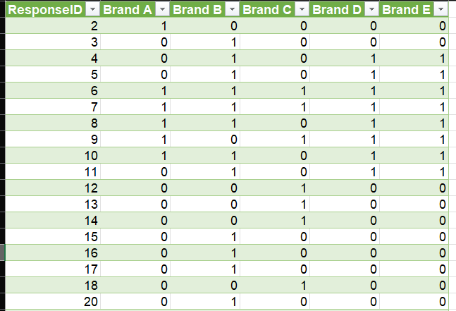
Sau khi xử lý dữ liệu bằng Power Query, kết quả cho thấy tổ hợp Brand C và Brand D mang lại mức độ tiếp cận không trùng lặp cao nhất. Phương pháp này có thể được mở rộng để áp dụng cho nhiều SKU khác nhau của cùng một thương hiệu, hỗ trợ ra quyết định trong chiến lược danh mục sản phẩm.
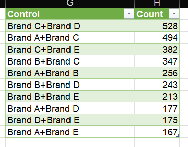
TURF – Media optimization
Thứ tự ưu tiên các kênh truyền thông để tối ưu mức độ tiếp cận thị trườngDựa trên cùng nguyên lý của TURF, nghiên cứu tiếp tục xác định thứ tự tối ưu để triển khai các kênh truyền thông. Việc đầu tư dàn trải hoặc chỉ dựa trên số liệu tổng tiếp cận của từng kênh có thể dẫn đến lãng phí do mức độ trùng lặp cao, khi cùng một người tiêu dùng bị tiếp cận nhiều lần qua các kênh khác nhau.
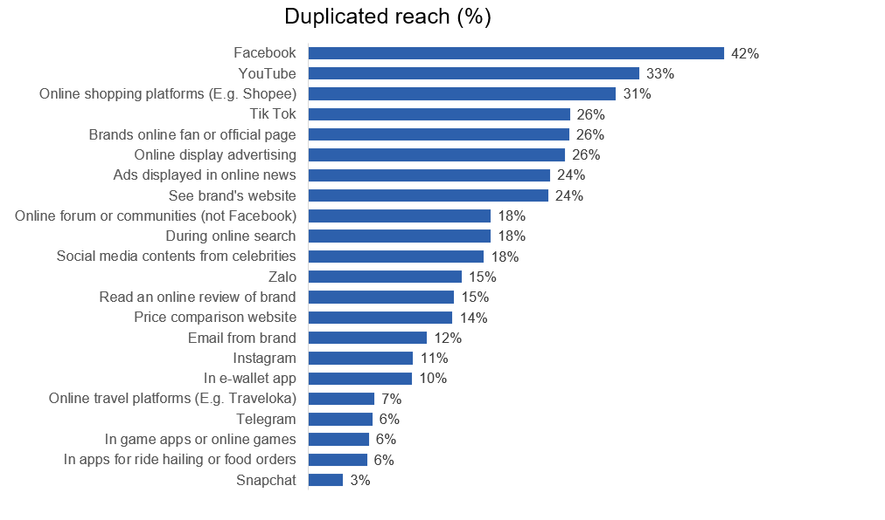
Người tiêu dùng được hỏi về các kênh mà họ biết đến thương hiệu, với khả năng chọn nhiều đáp án. Phân tích cho thấy Facebook là kênh có độ tiếp cận cao nhất, do đó nên được ưu tiên đầu tư đầu tiên. Tuy nhiên, nếu tiếp tục đầu tư vào YouTube ngay sau đó mà không loại trừ những người đã tiếp cận qua Facebook, mức độ trùng lặp sẽ cao và hiệu quả giảm.

Bằng cách loại bỏ nhóm người đã chọn Facebook và phân tích phần còn lại, kênh tiếp theo mang lại độ phủ mới cao nhất là YouTube. Áp dụng phương pháp này lặp lại cho các kênh tiếp theo, doanh nghiệp có thể xây dựng lộ trình đầu tư truyền thông theo thứ tự tối ưu. Trong ví dụ này, việc triển khai bốn kênh theo thứ tự đề xuất giúp thương hiệu tiếp cận được khoảng 79% thị trường, và có thể tiếp tục mở rộng đến khi đạt mức độ phủ mong muốn trên 90%.
Tóm tắt giá trị chiến lược
- Brand A dẫn đầu nhưng cần cải thiện trải nghiệm để tăng NPS.
- Brand C và D có tiềm năng nhưng nghẽn ở giai đoạn trial.
- Key Driver Analysis giúp phân bổ nguồn lực hiệu quả.
- Thứ tự tiếp cận truyền thông tối ưu để reach 90%: Facebook --> Youtube --> Ví điện tử (Momo,…) --> Sàn thương mại điện tử (Shopee,…)